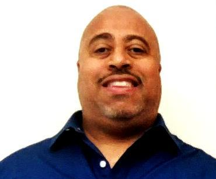

William Galloway

Objective
To obtain an entry level Computer Support Position by
using my education and my career related experience
Education
Forsyth Technical Community College, Winston-Salem, NC
Associate's Degree, Computer Information Technology
2011 - 2013
GPA: 3.953
Work Experience
Manufacturing Associate Corning, Winston-Salem, NC January 2014 - September 2023
Maintain continuous operation of Stranding Lines
Certify on manufacturing equipment
Enagage in continuous improvement activities
Observe all safety rules and regulations
Perform quality checks
Worked in a team-based enviroment
Assist with departmental training of new employees as requested
Desktop Computer Assembly Associate, Dell, Winston-Salem, NC June 2008 - November 2010
Assembled desktop computers per customer specifications
Performed quality checks as the computers were assembled
Worked in a team-based enviroment
Performed troubleshooting techniques on computers
Met daily production goals based on specific computer platforms
Skills
Computer Skills
Software Troubleshooting
Microsoft Office
Windows 10 and 11
Hardware installation and repair
Troubleshooting skills
Communication Skills
Excellent written and verbal communication skills
Strong organizational and time management skills
Precise attention to detail
Adept in the use of active listening and critical thinking skills
Excellent customer service skills
Awards
Dean's List/President's List All Semesters Forsyth Technical Community College
Certifications
Google Data Analytics Specialization
IBM IT Support Specialization